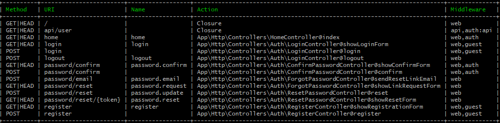
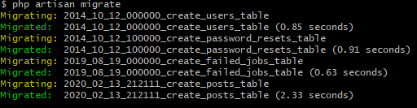

Bienvenue à ce workshop dédié au framework Laravel. Nous allons pas revenir ici sur la genèse de Laravel mais nous allons vous proposer de vous immerger complètement via le coding. Pour suivre ce workshop il y a des prérequis en ce qui concerne vos connaissances mais aussi en ce qui concerne votre ordinateur. Pour la configuration de votre ordinateur vous pouvez suivre notre tutorial en suivant ce lien.
En ce qui concerne les prérequis pour travailler avec Laravel, il faut avoir une certaine base en PHP et en Programmation Orienté Objet (POO) mais rien d'insurmontable.
Pour une meilleur compréhension nous avons décidé d'introduire des codes couleur et de style.
- Ce style représente les chemins du fichier ou vous devrez faire vos modifications.
- Ce style représente les codes que vous devrez ajouter à votre fichier.
- ce style représente les commandes que vous devrez rentrer dans votre console.
Bon ! Vous êtes prêt ? Votre machine à tous les prérequis et vous avez passé tout les tests ?
Commençons alors !
1.Création de notre projet
Allez dans votre dossier de travail et pour ceux qui n'ont pas installé laravel englobal vous pouvez créer votre projet avec composer. Pour ça entrer la commande suivante:
composer create-project –prefer-dist laravel/laravel blog
Pour ceux qui ont installé laravel en Global c'est celle-ci : laravel new blog
Il vous faudra attendre quelques minutes, le temps que tous les fichiers nécessaires à Laravel soient déployés sur votre ordinateur. Mais si tout a fonctionné normalement, composer ou laravel à dû créer un dossier « blog ». Entrez dedans ! Vous devriez avoir quelque chose de ce style.
Maintenant, nous pouvons tester le serveur de développement et pour ça nous allons utiliser artisan. Artisan, est votre cli, votre ligne de commande. Il suffit de se positionner dans le dossier racine et d’utiliser la commande : php artisan et vous aurez la page d'aide de cet outil. Plus d'infos
Mais testons notre serveur en entrant la commande php artisan serve
Normalement la console vous renvoie ceci:
Laravel development server started: http://127.0.0.1:8000 [Wed Feb 19 00:24:12 2020] PHP 7.4.1 Development Server (http://127.0.0.1:8000) startedPour vérifier que tout est correcte rendons nous dans notre browser et tapez dans la barre d'adresse 127.0.0.1:8000 ! Normalement vous devriez avoir la homepage de laravel.
1.a Configuration de notre projet
Dans notre projet laravel nous allons travaillons avec une base SQL ( n'oubliez pas de créer votre base de donnée worklara soit via votre console ou votre phpmyadmin.), mais pour que notre projet y est accès nous devons lui fournir les paramètres de cette dernière. Pour ça je vous invite à aller à la racine de votre projet et nous allons éditer le fichier d'environnement avec notre éditeur de console. Ici nous employons NANO mais libre à vous d'en employer un autre. N'oubliez pas de stopper votre serveur en faisant un control+c puis éditons notre fichier en faisant la commande suivante nano .envNous allons renseigner les lignes suivantes.
- APP_NAME=Workshop #Le nom de notre application
- DB_CONNECTION=mysql #Le type de connection à la base
- DB_HOST=127.0.0.1#L'adresse du host
- DB_PORT=3306#Le port d'écoute de votre mysql
- DB_DATABASE=worklara#Le nom de la base de donnée
- DB_USERNAME=laravel#Le user de votre base de donnée
- DB_PASSWORD=laravel#Le mot de passe de votre base de
Une fois les modifications apporté, sauvez votre fichier et relancer votre serveur avec artisan : php artisan serve
2. Eloquent & Migrations
Dans ce chapitre nous allons parler de base de données. Une application quelle qu'elle soit, nécessite pour la plupart du temps de travailler avec des données stockées. Et tout les programmeurs connaissent cet exercice récurrent qu'est le CRUD. Laravel nous 'facilite' l'exercice grâce à Eloquent. ELOQUENT est un ORM (Object-Relationnal-Mapping). En bref, c'est un ensemble de class qui vont nous permettre de travailler avec les tables de données comme si elles était des objets. C'est cette ORM qui va s'occuper de faire les requêtes. Vous allez vite comprendre car nous allons de ce pas nous immerger dans ces tables en commençant nos migrations.
mais c'est quoi une Migration ?
Une migration permet de mettre à jour votre base de données, que cela soit pour créer, modifier, ou supprimer un colonne, une table. On créer un fichier de migration par table. Si par exemple vous allez dans votre dossier Database/, vous pouvez voir 3 dossiers (factories,migrations et seed). Entrons dans le dossier migrations. Nous pouvons remarquez qu'il y a déjà 3 fichiers présents. Leur nom sont explicites. Ses fichiers sont là pour l'authentification, présent jusqu'à Laravel 5 mais depuis la version 6 nous devons charger une extension pour pouvoir travailler avec un système d'authentification.
Mais nous éloignons pas du sujet, notre projet contiendra 3 tables, une table users, une table posts et une table comments. C'est trois table devront être relié entre elles. Et c'est là que ELOQUENT nous sera utile, et rapide comme une -> . Mais commençons ! et retournons dans notre console artisan.
Chargeons le package d'authentification: composer require laravel/ui --dev.
une fois installer vous pouvez faire un php artisan ui --help. Vous remarquerez que disposez de 3 presets pour l'échafaudage de vos vues. (bootstrap/vue/et react !). Pour un soucis de facilité et surtout de rapidité de notre style, nous allons choisir bootstrap. Nous continuons en entrant la commande suivante. php artisan ui bootstrap --auth et nous finissons en compilant le tout via cette commande npm install && npm run dev.
DIA11->DIA22
Cette dernière va prendre un certain temps, pendants ce temps je vous laisse faire ' le tour du propriétaire ' et regarder par exemple dans les routes en ouvrant une nouvelle console dans et à la racine faite un php artisan route:list On peut déjà voir les routes que notre extension à installer, et profitons en pour voir ça de plus prêt. Nous remarquons que sur chaque route nous avons une méthode (get ou post) mais vous verrais plus loin qu'il y a d'autre type de méthode que nous allons employer. Nous avons ensuite l'URI, qui est la route telle que nous la trouverons dans notre barre d'adresse, suivie de son nom. Il est intéressant de pouvoir nommer ses routes. Imaginez que pour une raison X ou Y nous devons changer les routes, que un /home/article devienne un /home/post, par je ne sais quelle convention. Nous devrions aller dans chaque page et changer nos routes. Si vous nommez vos routes, vous n'aurez qu'à effectuer vos changement de route dans le fichier routes/web.php. La colonne suivante, comme son nom l'indique, contient l'action qui sera appelé une fois dans cette route (nous verrons plus tard en détail). Pour finir le middleware...On appel une sorte de filtre, par exemple, celui qu'on vient d'installer Auth. En gros le middleware Auth qu'on appel va faire des vérifications, si on est logés ou pas et le cas échéant réaliser une redirection vers un formulaire d'inscription ou de login. Mais on peut imaginer pour un blog, réaliser un middleware qui va vérifier si vous êtes admin ou rédacteur ou encore si une requête contient du code ajax ou json. Bref ça vous permet de faire des chose répétitive sans pour autant devoir le refaire ou y pensez à chaque fois.
Voilà notre package installé et compilé. Entrons dans le vif du sujet et dans la migration.
DIA 23->25
Nous allons tout d'abord créer notre table 'posts' et 'comments', pour ça retour en console et php artisan make:Model -a Post suivi d'un php artisan make:Model -a Comment . Que venons-nous de faire ? Comme indiqué après la fin de la commande, nous venons de demander à artisan de créer un model, un factory,un fichier migartion, un seeder et notre controller. Tout ça en une commande. Cool non ?Nous allons maintenant définir notre table user. Open->database/migrations/*_create_users_table.php
Nous remarquons que nous avons deux fonctions (up/down), la première est utilisé lors de la migration et la deuxième lors d'un artisan migrate:rollback. Le rollback permet de revenir en arrière et ce autant de fois que l'on souhaite. Nous allons maintenant modifier notre fonction 'up' pour qu'elle reflète mieux ce que l'on souhaite dans notre table user.
public function up()
{
Schema::create('users', function (Blueprint $table) {
$table->increments('id');
$table->string('name');
$table->string('firstname');
$table->string('avatar_url')->default('user.jpg');
$table->string('email')->unique();
$table->string('password');
$table->rememberToken();
$table->timestamps();
});
}
Nous avons deux champs à ne pas toucher c'est rememberToken (qui sert au session / cookies) et timestamps qui va ajouter dans notre table user la date d'inscription et la date de modification d'un profile.
Nous allons passer à notre table password resets.
Open-> database/migrations/*_create_password_resets_table.php nous retirons juste l'option nullable de notre timestamp.
public function up()
{
Schema::create('password_resets', function (Blueprint $table) {
$table->string('email')->index();
$table->string('token');
$table->timestamp('created_at');
});
}
Dans notre table posts. Open->database/migrations/*_create_posts_table.php
public function up()
{
Schema::create('posts', function (Blueprint $table) {
$table->increments('id');
$table->string('title',300);
$table->text('content');
$table->integer('like');
$table->integer('user_id')->unsigned();
$table->foreign('user_id')->references('id')->on('users')->onDelete('cascade');
$table->timestamps();
});
}
Avez-vous remarqué quelque choses de bizarre ? Oui ? $table->foreign('user_id')->references('id')->on('users')->onDelete('cascade');.
Quelques explications s'impose.
Nous savons que chaque utilisateur aura plusieurs 'post', et pour savoir à qui appartient le post nous avons rajouté dans notre table posts, une variable "user_id" qui correspond au 'id' de la table "user". Et bien c'est ce que l'on déclare ici. Nous signifions à la table de données une relation direct entre la base "posts" et "users". Que 'user_id' fait référence à 'id' dans la table (users) et on lui rajoute la méthode 'Delete' en cascade. Cela signifie que si nous effaçons l'user, et bien tout les enregistrements se trouvant dans la table 'posts' comportant l' 'user_id' designé doit être effacés.
Passons à la table des commentaires.
Schema::create('comments', function (Blueprint $table) {
$table->increments('id');
$table->mediumText('content');
$table->integer('user_id')->unsigned();
$table->foreign('user_id')->references('id')->on('users')->onDelete('cascade');
$table->integer('post_id')->unsigned();
$table->foreign('post_id')->references('id')->on('posts')->onDelete('cascade');
$table->timestamps();
});
Voilà nous avons fini de paramètrer la création de nos 4 tables. Lançons notre première migration depuis notre console. php artisan migrate. Vous devriez avoir quelques chose du genre 
Et vous pouvez vérifier dans votre phpmyadmin la création des table et de la foreign key.
DIA 26
2.a Eloquent & Migrations / Les Models
Allons voir d'abord le Model 'User' : Open -> app\User.php
Ce que nous remarquons c'est que d'origine, Laravel est assez verbeux. On va pas s'en plaindre ! C'est des indications utile lorsqu'on début avec ce framework. Que trouvons nous ?
protected $fillable : désigne les attributs pouvant être assignés en masse.
protected $hidden : désigne les attributs omis dans la sérialisation du modèle.
protected $casts : désigne les attributs devant être convertis en types natifs (v5.0)
Etant donné que nous avons rajouter des variables à notre table user nous allons les ajouter dans les attributs pouvant être assignés en masse. De plus nous allons lui ajouter une fonction 'posts' qui en gros va juste dire que chaque utilisateur à plusieurs posts. La relation 1 To Many.
<?php
namespace App;
use Illuminate\Contracts\Auth\MustVerifyEmail;
use Illuminate\Foundation\Auth\User as Authenticatable;
use Illuminate\Notifications\Notifiable;
class User extends Authenticatable
{
use Notifiable;
/**
* The attributes that are mass assignable.
*
* @var array
*/
protected $fillable = [
'name', 'firstname','email', 'password',
];
public function posts(){
return $this->hasMany(Post::class);
}
/**
* The attributes that should be hidden for arrays.
*
* @var array
*/
protected $hidden = [
'password', 'remember_token',
];
/**
* The attributes that should be cast to native types.
*
* @var array
*/
protected $casts = [
'email_verified_at' => 'datetime',
];
}
De la même façon, nous allons aller dans le Model posts : Open -> app\Post.php.
<?php
namespace App;
use Illuminate\Database\Eloquent\Model;
class Post extends Model
{
protected $fillable = ['title','content','like','user_id'];
/* un post appartient à un user donc ont relie via la relation belongsTo */
public function User(){
return $this->belongsTo(User::class);
}
/* un post peut posséder plusieurs commentaires ont relie via la relation hasMany */
public function comments(){
return $this->hasMany(Comment::class);
}
}
Ici nous créons une fonction User qui définit une relation inverse du 1 to Many, qui en Laravel se traduit par belongsTo . Mais en quoi ça va nous simplifier la vie tout ça ? Et bien, lorsque nous allons afficher nos posts et que nous souhaitons afficher le nom ou le mail de la personne ayant posté le message, il nous suffira de faire une fonction du type
$postUserName = $Post()->user->name .
Et nous aurons le nom tout simplement ! Plus d'informations sur les relations entres les tables en laravelEt pour finir le Model Comment : Open -> /app/Comment.php
<?php
namespace App;
use Illuminate\Database\Eloquent\Model;
class Comment extends Model
{
// les données qui sont requis pour la base de données
protected $fillable = ['content','user_id', 'post_id' ];
/* un commentaire appartient à une user et employons donc la methode belongsTo*/
public function User() {
return $this->belongsTo(User::class);
}
/* un commentaire appartient à un post */
public function post(){
return $this->belongsTo(Post::class);
}
}
DIA 27-28
2.b Eloquent & Migrations / Les Factory
Les factory sont nos usines à data, elles peuvent nous créer des données random, mais Laravel nous apporte aussi la class Faker ! Comme sont nom l'indique, cette class va nous permettre de créer de fausses données mais en plus on pourra lui dire quelle type de données ce qui nous permettra de faire des tests rapidement sans se fatiguer à les créer. Voyons comment ça marche et ouvrons sans tarder le factory du model User qui à été créer automatiquement lors de son installation.
Open -> database\factories\UserFactory.php
Nous voyons que la class Faker\Generator est appelé ainsi que la class Str qui possèdent une fonction random. nous allons modifier notre factory en fonction de notre fichier migration.
<?php
/** @var \Illuminate\Database\Eloquent\Factory $factory */
use App\User;
use App\post;
use Faker\Generator as Faker;
use Illuminate\Support\Str;
/*
|--------------------------------------------------------------------------
| Model Factories
|--------------------------------------------------------------------------
|
| This directory should contain each of the model factory definitions for
| your application. Factories provide a convenient way to generate new
| model instances for testing / seeding your application's database.
|
*/
$factory->define(User::class, function (Faker $faker) {
return [
'name' => $faker->name,
'firstname' => $faker->firstName,
'avatar_url' => "user.jpg",
'email' => $faker->unique()->safeEmail,
'password' => '$2y$10$92IXUNpkjO0rOQ5byMi.Ye4oKoEa3Ro9llC/.og/at2.uheWG/igi', // password
'remember_token' => Str::random(10),
];
});
Nous allons maintenant faire de même avec notre post factory. Open->database\factories\PostFactory.php
<?php
/** @var \Illuminate\Database\Eloquent\Factory $factory */
use App\User;
use App\Post;
use Faker\Generator as Faker;
$factory->define(Post::class, function (Faker $faker) {
return [
'title' => $faker->text($maxNbChars=150),
'content' => $faker->paragraph($nbSentences = 6, $variableNbSentences = true),
'like' => $faker->numberBetween($min=1,$max=300)
];
});
Nous DEVONS appeler ici la class User et elle DOIT précéder la class Post sinon nous aurons des erreurs plus tard. Vous avez remarquez que nous n'avons pas créer de data pour les user ! Rappelez-vous que chaque post doit avoir un user_id relié à un id de la table User. Alors vous vous demandez comment et où on va faire cela et bien c'est dans le seeder. Notre prochain sujet...
Modifions notre dernier Factory, Open -> database\factories\CommentFactory.php
<?php
/** @var \Illuminate\Database\Eloquent\Factory $factory */
use App\Comment;
use Faker\Generator as Faker;
$factory->define(Comment::class, function (Faker $faker) {
return [
'content'=>$faker->paragraph(20, false)
];
});
DIA 29 -> 31
2.c Eloquent & Migrations / Les Seeder
Les seeders sont les fichiers qui vont remplir au sens propre notre base de données. Généralement pour avoir un meilleur contrôle, nous devrions créer un fichier pour chaque table. Si vous allez dans le dossier database\factories vous trouverez notre fichier postSeeder.php. Vous voyez aussi le fichier DatabaseSeeder.php dans ce fichier vous pouvez appeler tout les fichier du seeds ou en grouper certain ce qui nous obligera pas à appeler via artisan chaque fichier seeds. Et c'est cette méthode que l'on va choisir pour notre projet. dès lors nous n'avons pas besoin de notre fichier postSeeder.php et vous pouvez l'éffacer ou le renommer (méthode que je préfère, no destruction ).
Ouvrons notre fichier : Open => database\seeds\DatabaseSeeder.php
<?php
use Illuminate\Database\Seeder;
use App\User;
use App\Post;
use App\Comment;
class DatabaseSeeder extends Seeder
{
/**
* Seed the application's database.
*
* @return void
*/
public function run()
{
// $this->call(UsersTableSeeder::class);
factory(User::class, 5)->create()->each(function($user) {
factory(Post::class, rand(1,2))->create(['user_id' => $user->id])
->each(function($post) use ($user){
factory(Comment::class, rand(1,2))->create([
'user_id' => $user->id,
'post_id' => $post->id
]);
});
});
}
}
Regardons de plus prêt notre code. Tout d'abord nous appelons nos deux class, User et Post. Puis nous appelons le factory User et nous lui demandons de créer 5 enregistrements. Nous lui donnons la méthode create (qui créer mais va aussi réaliser une sauvegarde dans la base). Nous lui disons par la suite que pour chaque user créer nous allons sauver plusieurs posts, créer grâce à l'appel du factory Post où là encore nous lui demandons de faire un random de 2 à 5 posts. Nous finissons le tout avec la function make() qui va retourner notre nouvelle élément.
Il nous restes plus qu'à tester le tout en lançant notre commande qui va lancer la créations de nos faux data. php artisan migrate:fresh --seed
Lorsqu'on commet une erreur avec les migrations on peut toujours faire un php artisan migrate:rollback ou pour vider vos tables un php artisan migrate:refresh.
Nous avons fini avec la section base de données pour l'instant, dans le prochain chapitre nous allons vous
parler des routes, des controller et de leurs viewer sans oublier Blade  2ème Parties >>
2ème Parties >>